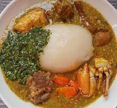

Le placali
Le placali est une pâte de manioc fermentée d'origine ivoirienne généralement dégustée avec la sauce graine, accompagné d'une sauce gluante gombo ou kplala.
ingrédients:du gombo frais
du piment
de la tomate fraiche
de l’huile rouge
de la viande de bœuf
du poisson fumé
des tripes
du crabe
des oignons
des feuilles de kplala (lalo)
du cube Maggi
du placali – Il s’agit de pâte de manioc fermentée.
de la potasse.
La préparation: Préparez le placali. Versez la pâte de placali et l’eau dans un saladier. Mélangez puis filtrez la préparation. Versez le mélange dans une casserole et portez à ébullition. Faites cuire à feu moyen en remuant constamment. La préparation doit épaissir. Retirez du feu et versez dans une grande assiette.
2
Préparez la sauce gombo. Retirez la peau du poulet et coupez sa chair en morceaux. Réservez. Pressez les citrons. Réservez le jus. Lavez les champignons. Épluchez les gousses d’ail et l’oignon. Hachez le tout. Lavez les tomates, pelez-les et coupez-les en morceaux. Coupez les extrémités des gombos et taillez-les en morceaux. Nettoyez les crabes.
3
Placez les morceaux de gombos dans un mixeur et réduisez-les en petits morceaux.
4
Versez l’huile d’olive dans une cocotte et faites chauffer à feu vif. Placez les morceaux de poulet dans la cocotte et faites-les dorer quelques minutes sur chaque face.5
Ajoutez les gousses d’ail, l’oignon, salez et poivrez. Arrosez avec 30 cl d’eau. Couvrez la cocotte et laissez mijoter pendant 20 min.
6
Après ce temps, retirez le poulet. Ajoutez 50 cl d’eau, les crabes, les crevettes séchées, les champignons. Portez à ébullition pendant 10 min.
7
Retirez les crabes. Ajoutez la purée de gombos, le piment et laissez mijoter 10 min supplémentaires.
8
Replacez la viande dans la cocotte ainsi que les crabes et le jus de citron. Poursuivez la cuisson pendant 20 min. Dégustez bien chaud le placali accompagné de la sauce gombo.
